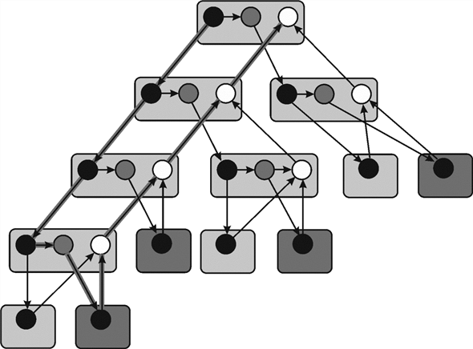

Multithreaded Algorithms
Serial algorithms are used when multithread algorithms concept was not evolved. The serial algorithms execute on the uniprocessor system in which only one instruction is executed at a time. In order to reduce the execution time of algorithm, a multithreaded algorithm was evolved. A multithread algorithm executes on the multiprocessor system in which more than one instruction can execute at a time.
The effect of spawn on the asymptotic work, span and parallelism
Spawn is a subroutine that executes or runs at the same time as that of parent. So by spawning, both parent and child work simultaneously. The main motive behind evolving the concept of spawning is to achieve parallelism, which results in increment in the overall performance of the computer.
Work is defined as the total time required for completing the entire multithreaded computation on a single processor. Suppose in the below example, each circle represents the strands which takes unit time. Therefore, total work done is 25 units.

Span is defined as the maximum time required for completing the strands along any path in the directed acyclic graph (DAG). It is an expensive path which contains maximum number of strands. The path highlighted in the above figure is known as span.
Work is the running time of a computation on a single processor.
Consider it as .
.
Now suppose there are unlimited numbers of processors. Then the span is denoted by
The ratio of
and,
that is, gives the
parallelism of the multithreaded computation.
Consider the algorithm P-FIB from the textbook:
If spawn is applied at the 4th line of P-FIB algorithm rather than just calling the function without spawn then there will be no effect on work, span or parallelism; this is so, because this will not cause any change in its serialization.
Consider the older version of P-FIB(n) algorithm as:
P-FIB(n)
1 if
2 return n
3 else x= spawn P-FIB ( )
)
4 y= P-FIB ( )
)
5 sync
6 return
Now in modified version of P-FIB(n-2) algorithm, there is a change in only 4th line which is as below:
3 else x= spawn P-FIB ()
4 y= spawn P-FIB ()
Spawn keyword is used to make operation in nested parallelism format. Due to this, process does not wait to finish its child process; and all process runs are in a parallel manner. One of the major problems with spawn is that it cannot use return values efficiently. Therefore in order to overcome this problem, sync is used. It suspends the procedure till their all children are not completed. That is why, applying spawn on 4th line of code will not affect work and span.
Analyzing the above modified algorithm:
Here three methods which are work, span and parallelism are used for analyzing the algorithm which is as follow:
Work:
Workof the above modified P-FIB (n) algorithm will be same as that of the execution time of its serialization in original P-FIB (n) algorithm.
The number of calling of recursive function remains same in P-FIB algorithm as in FIB algorithm. Hence, calculate the work for P-FIB algorithm similar to FIB algorithm.
Therefore, (from the equation 27.1 in the book)
Hence work of modified P-FIB (n) is .
Span:
For P-FIB the spawned call to P-FIBand P-FIBcan run in parallel.
Therefore spawn can be calculated as,
Hence span of modified P-FIB (n) is .
.
Parallelism:
Parallelism is the ratio of work by span that is ratio of
by
.
Therefore,
Parallelism=
Hence span of modified P-FIB (n) is.
Executing P-FIB (5)
Spawn is a subroutine that executes or run at the same time as that of parent. So by the
Spawning both parent and child work simultaneously. The main motive behind for evolving the concept of spawning is to achieve parallelism, which results increase the overall performance of computer.
Work is defined as total time required for completing the entire multithreaded computation on a single processor. Suppose in the below example each circle represents the strands which takes unit time. Therefore total work done is 25 units.
Example:
Span is defined as the maximum time required for completing the strands along any path in the directed acyclic graph (DAG). It is an expensive path which contains maximum number of strands. The path highlighted in the above figure is known as span.
Work is the running time of a computation on a single processor.
Consider it as.
Now suppose there are unlimited numbers of processors. Then the span is denoted by
The ratio of
and,
that is gives the
parallelism of the multithreaded computation.
Computation of a computational dag:
Work: The figure shown above is a directed acylic graph of P-FIB(5). Circles in the above figure represent the strands. The black circle represent the base case or the procedure call P-FIB(n-1). The shaded circle represent the procedure call P-FIB(n-2).
Suppose each strands take unit time. As defiend above, work is the total number of strand. In this case it is 29 (number of circles with all colors). Hence, total work in P-FIB(5) is 29.
Span: Span is defined as the length of the longest path of the strands. In this case it is 10.
Hence span in P-FIB(5) is 10 (number of boxes having light color than black boxes like P-FIB(0) lowest level, P-FIB(2) right corner second lowest).
Parallelism: Parallelism is the ratio of work by span
that is ratio of by.
Parallesim=
=
=
Time bound of Greedy scheduler: Greedy scheduler is a
scheduler that tries in each time step to allocate maximum number
of strands to the processors. Suppose there are processors
available. Now, if there are strands
which can be executed during a certain timestamp, then the greedy
scheduler is responsible for assigning any of the ready
strands to processors. In the other case, if there are less than
strands
ready to execute during a time stamp, then each ready strand is
assigned to its own processor by greedy scheduler.
processors
available. Now, if there are strands
which can be executed during a certain timestamp, then the greedy
scheduler is responsible for assigning any of the ready
strands to processors. In the other case, if there are less than
strands
ready to execute during a time stamp, then each ready strand is
assigned to its own processor by greedy scheduler.
Since there are 3 processor therefore, at a time there can be atmost 3 strand in execution.
In the above diagram, each strand are marked with a time stamp. Two strands of P-FIB(5) and one strand of P-FIB(4) executes at 1st time stamp. Then 1 strands of P-FIB(4) and two strands of two different P-FIB(3) executes at 2nd time stamp. Similarly all the starnds executes and final result get at 12th time stamp. The time stamp define the time of exection of a strand on a processor.
Multithreaded Algorithms: A multithread algorithm executes on the multiprocessor system in which more than one instruction execute at a time.
Dynamic Multithreading: It gives flexibility to programmer to implement parallelism in application without concerning about load balancing and rest other things.
Spawn is a subroutine that executes or run at the same time as that of parent. So by the
Spawning both parent and child work simultaneously. The main motive behind for evolving the concept of spawning is to achieve parallelism, which results increase the overall performance of computer.
Work is defined as total time required for completing the entire multithreaded computation on a single processor. Suppose in the below example each circle represents the strands which takes unit time. Therefore total work done is 25 units.
Span is defined as the maximum time required for completing the strands along any path in the directed acyclic graph (DAG). It is an expensive path which contains maximum number of strands. The path highlighted in the above figure is known as span.
Work is the running time of a computation on a single processor.
Consider it as.
Now suppose there are unlimited numbers of processors. Then the span is denoted by
The ratio of
and,
that is gives the
parallelism of the multithreaded computation.
Complete steps: A step is said to be complete step if during the time step at least p strands are ready to execute.
Incomplete step: A step is said to be incomplete step if during the time step at least p strands are ready to execute.
Time bound of Greedy scheduler: Greedy scheduler is a scheduler that tries in each time step to allocate maximum number of strands to the processors.
Suppose there areprocessors
available.
Now if there are strands
which can be executed during a certain timestamp, then the greedy
scheduler is responsible for assigning any one of the ready strands
to processors.
In the other case, if there are less than strands
ready to execute during a time stamp, then each ready strand is
assigned to its own processor by greedy scheduler.
Consider the Scheduling and theorem 27.1 from the textbook, chapter 27 of section 27.1.
Use work law and calculate the best running time possible for
processors as below:
Where is the execution time of an algorithm on P processors.
Use pan law and calculate the best running time possible for
processors,
Where is the execution time of an algorithm on unlimited number of processors.
So, a greedy processor can execute a multithreaded computation in time (equation 27.4 of the textbook).
Work is the total time required for completing the entire multithreaded computation.
Using work law, calculate the best running time possible for P processors as below:
Span is defined as the maximum time required for completing the strands along any path in the directed acyclic graph (DAG).
Use span law and calculate best running time possible for
processors as below:
Exclude the work done by processors to calculate the total running time. Calculate the time required for a greedy processor can execute a multithreaded computation as below:
Therefore, the time bound is slightly stronger (because here span constraints are not override) than the bound given in theorem 27.1. Hence proved.
Computation Dag for Two Execution Process
Spawn is a subroutine that executes or run at the same time as that of parent. So by spawning, both parent and child work simultaneously. The main motive behind for evolving the concept of spawning is to achieve parallelism, which results increase the overall performance of computer.
Work is defined as total time required for completing the entire multithreaded computation on a single processor. Suppose in the below example each circle represents the strands which takes unit time. Therefore total work done is 25 units.
Span is defined as the maximum time required for completing the strands along any path in the directed acyclic graph (DAG). It is an expensive path which contains maximum number of strands. The path highlighted in the above figure is known as span.
Work is the running time of a computation on a single processor.
Consider it as.
Now suppose there are unlimited numbers of processors. Then the span is denoted by
The ratio of
and,
that is gives the
parallelism of the multithreaded computation.
Consider the following dag: Suppose there are 2 CPUs available for the execution.
Execution sequence 1 of dag:
1. At the beginning there is only one strand available. So this strand is alloted to one of the cpu at 1st time stamp.
2. Now, at 2nd time stamp there are 3 available strand. Since there are 2 Cpu hence 2 strand named 2 will be chosen as shown in above figure.
3. Again at 3rd time stamp there are 3 available strand (1 strand from the previous step). Since there are 2 CPUs, hence 2 strand named 3 will be chosen as shown in above figure.
4. Now at 4th time stamp there are 2 available strand (1 from previous step) it will be scheduled to 2 CPU. Mark as 4, As shown in above figure.
5. Since there is only 1 strand available at 5th time stamp hence it will be scheduled to any of the two CPU. Mark as 5 As shown in figure.
6. At the 6th time stamp, there is only 1 strand available hence it will be scheduled to any of the two CPU. Mark as 6 As shown in figure.
Execution sequence 2 of the dag:
1. At the beginning there is only one strand available. So this strand is alloted to one of the cpu at 1st time stamp.
2. Now at 2nd time stamp there are 3 available strand. Since there are 2 CPU hence 2 strand named 2will be chosen as shown in above figure.
3. Again at 3rd time stamp there are 3 available strand (1 strand from the previous step). Since there are 2 CPU hence 2 strand named 3 will be chosen as shown in above figure.
4. Now, at 4th time stamp there are 2 available strand (1 from previous step) it will be scheduled to 2 Cpu. Mark as 4, As shown in figure.
5. Since there is 2 strand available at 5th time stamp hence it will be scheduled to two CPUs. Mark as 5 As shown in above figure.
Work is defined as total time required for completing the entire multithreaded computation on a single processor.
Span is defined as the maximum time required for completing the strands along any path in the directed acyclic graph (DAG). It is an expensive path which contains maximum number of strands.
Work is the running time of a computation on a single processor.
Consider it as.
Now suppose there are unlimited numbers of processors. Then the span is denoted by
The ratio of
and,
that is gives the
parallelism of the multithreaded computation.Greedy scheduler is a scheduler that tries in each time step to allocate maximum number of strands to the processors.
Suppose there are processors
available. Now if there are strands
which can be executed during a certain timestamp, then the greedy
scheduler is responsible for assigning any of the ready
strands to processors. In the other case, if there are less than
strands
ready to execute during a time stamp, then each ready strand is
assigned to its own processor by greedy scheduler.
Consider the Scheduling and theorem 27.1 from the textbook of section 27.1,
By work law,
Best running time possible for
processors,
Where is the execution time of an algorithm on P processors.
By span law,
Best running time possible for
processors,
Where is the execution time of an algorithm on unlimited number of processors.
Therefore a greedy processor can execute a multithreaded computation in time (equation 27.4 of the textbook).
Given that (Three runs yielded, these are deterministic multithreaded algorithms on 4, 10, and 64 processors of an ideal parallel computer using a greedy scheduler),
Seconds …… (1)
Seconds …… (2)
Seconds …… (3)
By work law, (refer equation 27.2 of book)
For P=4,
Using the value of equation (1)
…… (4)
By span law, (refer equation 27.3 of book)
For P=64,
Using the value of equation (3)
…… (5)
(Refer equation 27.5 of book)
For P=10 and using the value of T10 from the equation (2) and considering the equation (4),
Which contradict the equation number (5) therefore, professor is lying or incompetent.
Multithreaded Algorithms
Serial algorithms are used since multithread algorithms concept had not been evolved. The serial algorithms executes on the uniprocessor system in which only one instruction is execute at a time. In order to reduce the execution time of algorithm a multithreaded algorithm has been evolved. A multithread algorithm execute on the multiprocessor system in which more than one instruction executes at a time.
Spawn is a subroutine that executes or run at the same time as that of parent. So by spawning, both parent and child work simultaneously. The main motive behind for evolving the concept of spawning is to achieve parallelism, which results increase the overall performance of computer.
Work is defined as total time required for completing the entire multithreaded computation on a single processor.
Span is defined as the maximum time required for
completing the strands along any path in the directed acyclic graph
(DAG). It is an expensive path which contains maximum number of
strands. Work is the running time of a computation on a single
processor. Consider it as.
Now suppose there are unlimited numbers of processors. Then the span is denoted by
The ratio of
and,
that is gives the
parallelism of the multithreaded computation.
In multithreaded algorithm of matrix multiplication, basic concept of matrix multiplication is used. For making it into a multithreaded form, just use the keywords parallel, spawn and sync;
Parallel is used in for loops to make them work in a parallel manner;
Spawn is used to solve the expression in a synchronized manner; and starting point of the synchronization.
Sync makes the output more systematic in nature.
In the following algorithm, the first-half recursively calls a new function, in which, the code recursively spawns the first half of the iteration of the loop, to execute in parallel with the second half of the iteration; and then it executes in sync.
The dynamic acyclic graph (DAG) represents the NEW_VEC_LOOP function computation. The two values in each rectangle like 1, 4 represent the j1and j2 which are the upper and lower bounds. The black circles represent the spawn NEW_VEC_LOOP line of code whereas shaded circle represents the NEW_VEC_LOOP line of NEW_VEC_LOOP () function which is as follow:
A multithreaded algorithm to multiply a
matrix by an  -vector:
-vector:
NEW_MAT_VEX
//find number of rows in Array
let be a new
vector of length
be a new
vector of length
//for loop to initialize n elements of p vector with 0.
parallel for i =1 to
//for loop to multiply all elements of Array matrix with p vector.
parallel for i=1 to
//call NEW_VEC_LOOP() function to multiply matrix and vector
=NEW_VEC_LOOP

return
NEW_VEC_LOOP
//if statement to check upper and lower bound are same or not.
if
return
//find the middle column of matrix
else
//first half of iteration
=spawn NEW_VEC_LOOP
//second half of iteration
= NEW_VEC_LOOP
//use to synchronize the spawn subroutine
sync
return
Analyzing the above modified algorithm:
Here three methods which are work, span and parallelism are used for analyzing the algorithm which is as follow:
Work:
Work of NEW_MAT_VEX can be calculated by calculating the running time of its serialization.
Consider the running time of NEW_VEC_LOOP is .
.
So, work of NEW_MAT_VEX that is  will be
will be
…… (1)
can be
calculated using the following recurrence,
By applying master theorem (In the analysis of the algorithm, master theorem gives the solution in asymptotic term for the recurrence relation),
Generic form of master theorem is:

Where,  is the sum
of cost of dividing the problem into sub-problems and the cost of
combining these sub-problems outside the recurrence call.
is the sum
of cost of dividing the problem into sub-problems and the cost of
combining these sub-problems outside the recurrence call.
Above recurrence relation is in form of
Here, according to the master theorem,
Then the solution of the recurrence relation become

Thus,
Putting the value of in equation (1)
Therefore,
Due to dynamic-multithreading, parallel loop executes in the single iteration. This reduces the extra effort of recursive spawning. Therefore the perfect linear speedup will not effect.
Span:
In order to analyze the span of parallel construct the extra burden of recursive spawning must also be count. The depth of recursive call is which have n number of iteration. The span for a parallel loop having n iteration has
Since can be done in constant time therefore it will be consumed in
In NEW_MAT_VEX() function, each iteration of second parallel for loop call NEW_VEC_LOOP() function to multiply the matrix and vector. Each time the NEW_VEC_LOOP() function half the space between 1 and n. Therefore the span becomes

Hence the span in NEW_MAT_VEX () algorithm is.
Parallelism:
Parallelism is the ratio of work by span that is ratio of
by.
Therefore,
Parallelism=
=
Hence the Parallelism in NEW_MAT_VEX () algorithm is.
Work of multithreaded algorithm for transposing a matrix,
Work of P-TRANSPOSE (A) matrix can be determined by calculating the running time of its serialization. It can be calculated by replacing both parallel for loop with normal for loop.
parallel for j=2 to n
parallel for i=1 to j–1
Consider the algorithm P-TRANSPOSE (A), the above two lines of code state as follows:
That is


Span of multithreaded algorithm for transposing a matrix,
Span of P-TRANSPOSE (A) depends on the span of two nested parallel for loop.
Let span of th
iteration of outer loop is be denoted by and span of
 th
iteration of inner loop is denoted by.
th
iteration of inner loop is denoted by.
 will become
maximum when =
will become
maximum when =
Now,
… … (1)
Since each iteration of the inner loop is performing the exchange operation which is done in constant time.
Therefore
So,
… … (2)
Substituting the value of (2) in (1)
Hence the span of P-TRANSPOSE (A) matrix is
Parallelism of multithreaded algorithm for transposing a matrix:
Parallelism is the ratio of by
that is work by span.
Work done in multithreaded algorithm for transposing matrix is:
Span on multithreaded algorithm for transposing a matrix is:
Therefore,
Hence the parallelism of P-TRANSPOSE (A) matrix is.
Analyzing the work, span and parallelism of P-TRANSPOSE ( A ) pseudo code
Spawn is a subroutine that executes or run at the same time as that of parent. So by the spawning both parent and child work simultaneously. The main motive behind for evolving the concept of spawning is to achieve parallelism, which results in increase the overall performance of computer.
Work is defined as total time required for completing the entire multithreaded computation on a single processor. Suppose in the below example, each circle represents the strands which takes unit time. Therefore, total work done is 25 units.
Span is defined as the maximum time required for completing the strands along any path in the directed acyclic graph (DAG). It is an expensive path which contains maximum number of strands. The path highlighted in the above figure is known as span.
Work is the running time of a computation on a single processor.
Consider it as.
Now suppose there areunlimited numbers of processors. Then the span is denoted by
The ratio of
and,
that is gives the
parallelism of the multithreaded computation. Transpose of
matrix is defined as interchanging the position of rows and
columns of matrix.Normal 'for' loop:
When there is a small task that consists of subtasks which are same and depend upon one another, then the normal 'for' loop is used.
It executes on a single processor sequentially and the order of result is defined as sequential in this loop.
For example:
for (i=0; i<=n; i++)
print ( i );
Output: 0, 1, 2, 3,…,n

Parallel 'for' loop:
Parallel 'for' loop is used for Parallelism, which is taking a certain task and dividing it into a set of related tasksto be executed concurrently.
It is used when one has a very long and intensive process that needs fast execution. This is possible when this process can be divided into independent sub-processes, and each process executes on a single processor.
The order of result may vary as the execution is done in parallel.
For example:
Parallel for (0, n, i=>)
{
Print (i);
i++;
}
Output: 0, 3, 7, 2…n

Work ( ) of
multithreaded algorithm for transposing
matrix after removing first parallel for loop:
Work of P-TRANSPOSE (A) matrix can be determined by calculating the execution time of its serialization. Therefore removing a parallel for loop from P-TRANSPOSE(A) will not make any effect on work.
parallel for j=2 to n
for i=1 to j–1
Consider the algorithm P-TRANSPOSE (A), the above two lines of code state as follows:
Span ( ) of multithreaded algorithm for transposing a matrix after removing first parallel for loop:
Use of parallel 'for' loop is preferred, as there are multiple processors in which multiple processes can execute simultaneously, and the execution time will be lower.
Span of the modified algorithm will be equal to the longest
iteration of that will
vary from to .
Therefore,
That is

Parallelism of multithreaded algorithm for transposing a matrix:
Parallelism is the ratio of by
that is work by span.
Work of multithreaded algorithm for transposing matrix is:
Span of multithreaded algorithm for transposing a matrix is:
Therefore,
Span is defined as the maximum time required for completing the strands along any path in the directed acyclic graph (DAG). It is an expensive path which contains maximum number of strands. The path highlighted in the above figure is known as span.
Work is the running time of a computation on a single processor.
Consider it as.
Now suppose there areunlimited numbers of processors. Then the span is denoted by
The ratio of
and,
that is gives the
parallelism of the multithreaded computation.Versions of chess problem:
A chess game has many versionsthat vary according to the rule and the size of the boards. Example: hexagonal chess, up-side down chess, rhombic chess, masonic chess and so many others.
So, for a particular version, there is a program to play the game; and considering all rules in it. In a chess problem, a programmer uses the concept of multithreaded algorithm to solve the problem in a more efficient way, because this algorithm uses the concept of parallelism.
In multithreaded algorithm work () and span
()
are used to calculate the performance. Consider a version of the
chess program which has P number of processors
According to theorem 27.1 the best execution time for P
processor having work and
span is as
follow:
For the above version
Now, consider that another version of the chess program which has the same number of processors (P) and

For this version,
Now, to make both the programs run equally fast
This is the number of processors needed to runboth the programs equally fast.
Numerical example:
First version,
The original program has work T1=2048 seconds
and critical path length, span  .
.
Second version,
The optimized program has work T1=1024 second and critical path length seconds.
The time taken by greedy scheduler to execute multithreaded
computation having work and
span is as
follows:
Computer with P processors
Using First Version
… … (1)
Using Second Version
… … (2)
Considering the equality part of the Greedy scheduler,
From (1) and (2), we have:
will vary
from 146 to 147 processors.